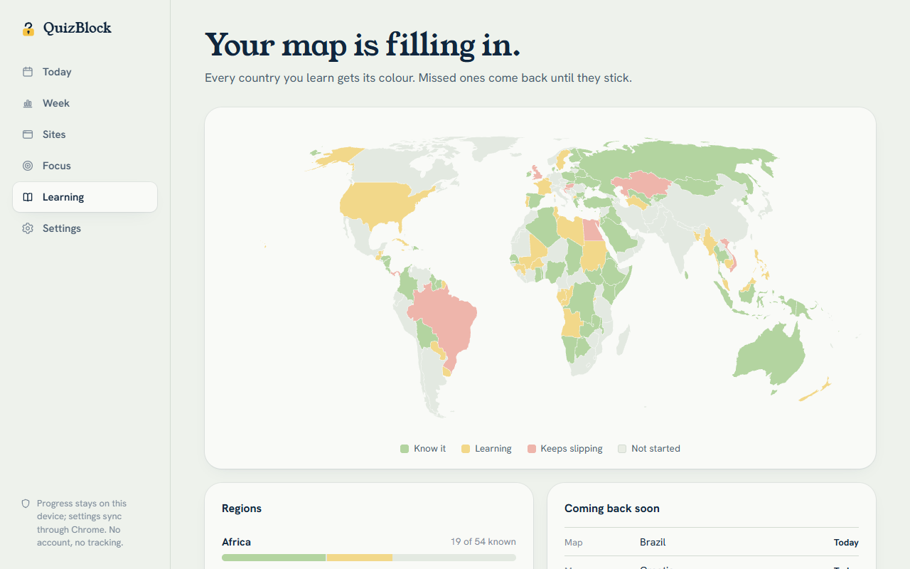

On this page
Spaced repetition is a way of reviewing what you learn at gradually increasing gaps, so that you test yourself on something just as you're about to forget it. It's one of the best-supported ideas in the science of learning, and it's simple to use, with a box of index cards or an app that keeps track for you. This guide explains what spaced repetition is, why it works, how the review gaps grow, and how to start.
The forgetting curve: how fast we forget
In 1885 the German psychologist Hermann Ebbinghaus published the results of an unusual experiment on himself. He memorised lists of nonsense syllables, so that nothing he already knew could help, and then measured how much he had kept after different delays. He did it by timing how long it took to relearn each list: the less time relearning took, the more had survived.
The pattern he found is now called the forgetting curve. Forgetting is fastest at the start, in the first hours and the first day, and then slows down. What's left after a few days fades much more gently.
He noticed something else too. Spreading his repetitions over several days took fewer repetitions in total than packing them into one sitting. That observation, that spacing beats cramming, has been tested ever since.
The spacing effect: why little and often wins
The spacing effect is one of the most often replicated findings in psychology. In 2006 a team led by Nicholas Cepeda pooled the results of hundreds of experiments on learning words and facts, and found that spreading study out over time led to better long-term memory than massing it together.
The frustrating part is that cramming feels better. Straight after a cramming session, the material seems fluent and familiar. Spaced study feels harder, because each time you come back you've forgotten a little and have to work to recall it. The psychologist Robert Bjork calls effort like this a "desirable difficulty": it feels like slower progress, but it's part of what makes the memory last.
Testing beats rereading
Spacing is half the story. The other half is how you review. Rereading notes is the most common way to study, and one of the least effective. Pulling an answer out of memory works much better. This is called the testing effect, or retrieval practice.
A well-known study by Henry Roediger and Jeffrey Karpicke, published in 2006, shows it clearly. Students read short prose passages, then either read them again or wrote down as much as they could remember. Tested five minutes later, the rereaders did slightly better. Tested two days or a week later, the students who had practised recalling remembered clearly more.
That's why flashcards work when they're used properly: they make you retrieve. The key is to really answer before you turn the card over, rather than glancing at it and thinking "yes, I knew that".
How spaced repetition works
Spaced repetition puts those two ideas together. You test yourself (retrieval), at gaps that grow longer each time you get it right (spacing), and you go back to short gaps when you get it wrong.
A typical schedule for one fact might look like this:
- Learn it today.
- Review it tomorrow.
- Then after three days, a week, two weeks, a month.
- Miss it at any point, and it goes back to the start.
The exact numbers matter less than the shape. Each successful recall makes the memory more durable, so the next review can wait longer. Things you know well cost you almost no time, and your effort goes where it's needed: on the things you keep forgetting.
Leitner boxes: spaced repetition on paper
In the 1970s the German science journalist Sebastian Leitner described a simple way to do this with index cards and a few boxes. It still works well:
- Set up five boxes, or five sections in one box, numbered 1 to 5.
- Put new cards in box 1.
- Review on a schedule: box 1 every day, box 2 every few days, box 3 once a week, and longer gaps for the boxes after that.
- Answer each card before you flip it. If you got it right, it moves up a box. If not, it goes back to box 1.
Cards you know drift up into boxes you rarely open. Cards you struggle with stay in box 1, where you see them often.
Flashcard apps
Apps such as Anki do the scheduling for you: they work out when each card is due and show you only those. That's a relief once you have hundreds of cards, because nobody wants to track a thousand due dates by hand.
How to use spaced repetition well
- One fact per card. "What's the capital of Australia?" works better than "Everything about Australia".
- Understand before you memorise. Spaced repetition makes things stick. It doesn't explain them.
- Be honest when you mark yourself. Nearly right, or right after a long struggle, means it needs another look soon.
- A few minutes every day. Short daily sessions are easier to keep up than a long weekly one, and they space your reviews for you.
- Go easy on new cards. Every new card brings future reviews with it. Add a handful a day and your reviews stay manageable.
- Mix topics. Shuffling related material makes you work out which answer fits, which helps you tell similar things apart.
If you fall behind, don't try to clear weeks of reviews in one go. Do a normal day's worth, and catch up over the next few days.
How QuizBlock uses spaced repetition
QuizBlock is a free Chrome extension that keeps distracting sites locked until you beat a short challenge: find a few countries on a map, or answer a few questions. Behind those challenges is a spaced repetition system, so each one doubles as a short review session.
Every country and question you meet is tracked on its own, in a five-box Leitner system with a few rules borrowed from flashcard apps:
- Right first time: it moves up a box, and the gap grows, from 3 days to 7, then 16, then 35.
- Found on a later try (on a map): it comes back tomorrow without moving up.
- Missed: it drops to the first box and is due again later the same day, but not within ten minutes, so you can't answer from short-term memory. Getting it right that same day only earns a review tomorrow.
- It moves up only when you remember it on a later day. Answering something before it's due earns nothing.
Each challenge asks what's due first, then brings in new material. When something is back because you missed it, the challenge tells you. A country or question counts as known once you've got it right first time on a few separate days.

The questions come from a hand-checked bank of more than 1,500, across ten subjects from history and science to music and sport. You can also import your own deck, from Anki with its pictures or as a CSV file, and quiz on it alongside the built-in subjects or on its own: see Import Anki decks and Add your own decks. For how each challenge is picked, see How challenges work. And if geography is your goal, here's how to learn every country with the same approach.
QuizBlock is free, with no account, and your progress stays in your browser. Add QuizBlock to Chrome and turn the moments you'd spend scrolling into reviews.